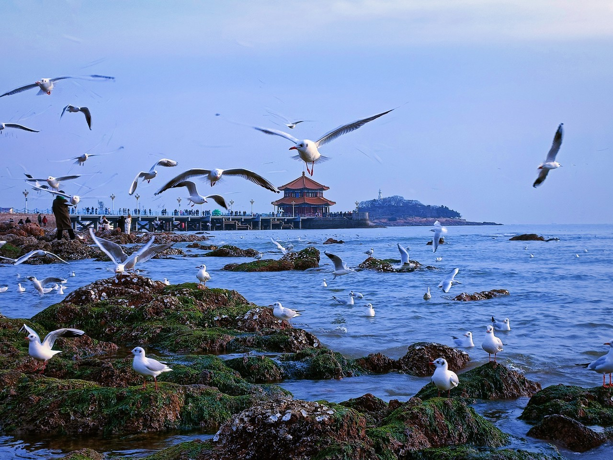
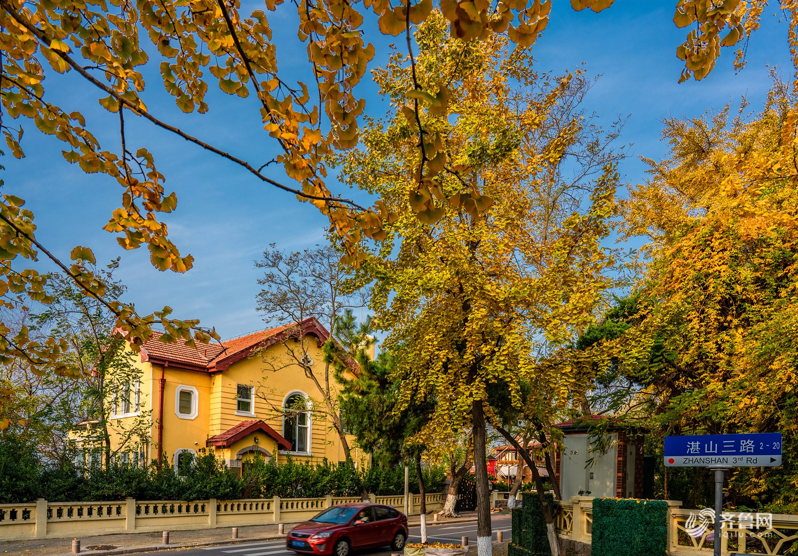

周五下班后上车睡一觉，周六清晨落地青岛，两天满打满算。这份不是愿望清单，是照着时间点走就能走的行程表。
郑州东往返青岛的高铁二等座，两人合计约 1442 元——票买完，住宿、吃饭、门票一分不剩。
所以这个预算只有一条路：夕发朝至的普速卧铺。两人往返硬卧约 930 元，省下的钱刚好覆盖一晚房、两天饭和一点门票。代价是车上睡一晚、回程到郑州已过午夜。
这三件不定，后面所有时间点都对不上。
价格按 2026-11-10 查询，出行前请在 12306 复核一次，淡旺季会有浮动。
备选 Z274：郑州站 17:11 → 青岛北 05:07，同样是硬卧 232.5。它的到站是青岛北（离市区更近），但 17:11 发车意味着周五要提前两小时下班。能早退就选它，最省心。
红岛站在城阳，离老城不近，但这段早高峰前的地铁空得很。到青岛站出站就是栈桥，行李直接拖过去。
更早的 Z318 是 13:06 青岛北发车、23:27 到郑州，能赶上周日夜里睡觉，但 Day 2 上午只剩四小时，八大关就得砍掉一半。想多玩就选 14:42 这班，代价是到郑州已过午夜、打车回家。
只住一晚，位置比档次重要——要能放下行李、能走着去栈桥、能半夜回得来。

从火车上醒来开始，一路走到夜里。这一天全程不坐车，靠腿和地铁。
洗漱、出站，跟着指示牌走地铁 8 号线。这个点站里人很少。
十一月末日出在 6:50 左右，从青岛站出来正好赶上天光。清晨栈桥上几乎没人，海鸥成群贴着回澜阁飞——这是全程最好的一个画面，也是这个点出发唯一的补偿。
甜沫配锅贴，或者豆腐脑加油条，人均 15 元。挑人多的那家进。
还没到入住时间，先跟前台说好寄存。轻装出门，今天走的路不少。
教堂外观免费，进去看要 10 元/人——这次跳过。中山路的骑楼和老字号门脸值得慢慢走一段。
白天比较冷清，更适合看建筑。别在这儿吃正餐，价格比外面贵三成。
公园免费，6:00–20:00 开放。山顶看红瓦绿树的老城全景，是整个市区最好的机位。旋转观景楼 15 元/人——这个钱可以省，站在山上平台拍一样出片。
免费，6:00–20:00。从信号山走过来十来分钟，两个山头看的是同一片老城，取景角度不同，都值得去。
湖北路店，人均 66 元。辣炒蛤蜊、鲅鱼饺子、海菜凉粉各来一份，两人一百三左右，是这两天唯一一顿正经海鲜。
红墙拐角是青岛最出名的拍照点，工作日中午人不多。故居免费，进去看十分钟。
沿海边一路走过去，全免费。琴屿路那段是贴着海的车道，日落前光线最好。
这是必须留的一段。整夜卧铺加一整天步行，不睡这一觉，晚上逛不动。
8 分钟，3 元。台东是青岛本地人吃饭逛街的地方，比劈柴院便宜实在。
小馆子解决，人均 50–60。蛤蜊、笔管鱼、炒海肠都是这个季节的。
烤鱿鱼、炸脂渣、袋装原浆。人均 40 能吃到撑，别一家吃饱，边走边吃。
地铁回青岛站，栈桥走五分钟。夜里的海风很硬，围巾一定带上。
半天时间，全部给八大关。中午撤，赶 14:42 的车。
如果前一晚已经结账，直接把包放前台，回来取。
街区免费。重点走居庸关路、山海关路，银杏和红顶别墅配着来。花石楼 8.5 元/人，是最值的一个收费点，进去看海景露台。公主楼、蝴蝶楼外观足够，别买票。
免费。十一月的沙滩没人，可以沿着水线走一段，风大但很干净。
从二浴沿海走到太平角，栈道贴海，是本地人散步的路。
简单吃，人均 40。别点大菜，饭后要坐十小时车。
地铁 3 号线直达青岛北，约 25 分钟。这一站是 3 号线，别走错到别的线。
站里便利店买水、面包、水果。十小时车，晚饭就在车上解决，别指望餐车便宜。
餐车在 14 车。卧铺乘客早点铺床，这趟车晚上十一点后熄灯。
午夜出站，地铁已停运，提前想好打车还是让家人接。周一上班会困，这一天别安排事。
按人均从低到高排，括号里是建议点法。
| 吃什么 | 人均 | 在哪 | 点法 |
|---|---|---|---|
| 辣炒蛤蜊 | 60–70 | 来之顺（湖北路店） | 配鲅鱼饺子，两人一份蛤蜊一份饺子刚好 |
| 鲅鱼饺子 | 含上 | 同上 / 双合园 | 按两卖，一人二两，别点整盘 |
| 甜沫 + 锅贴 | 15 | 中山路早点摊 | 青岛人的早饭，咸口糊糊，第一次喝会愣一下 |
| 烤鱿鱼 / 炸脂渣 | 40 | 台东夜市 | 边走边吃，鱿鱼挑现烤的，脂渣买小份 |
| 原浆啤酒 | 15–20/杯 | 台东 / 登州路 | 袋装原浆最划算，别在景区里喝 |
右列是这一版实际要花的钱。想加啤酒博物馆（60 元/人）的话，只有走「回程硬座」方案才腾得出来。
两套方案，差额只在回程坐硬卧还是硬座。
往返都睡卧铺，最舒服，但预算一点余量都没有。
夜车方案比白天高铁多出一堆细节，都是踩过才知道的。
勾选会存在这台设备上，关掉页面再打开还在。